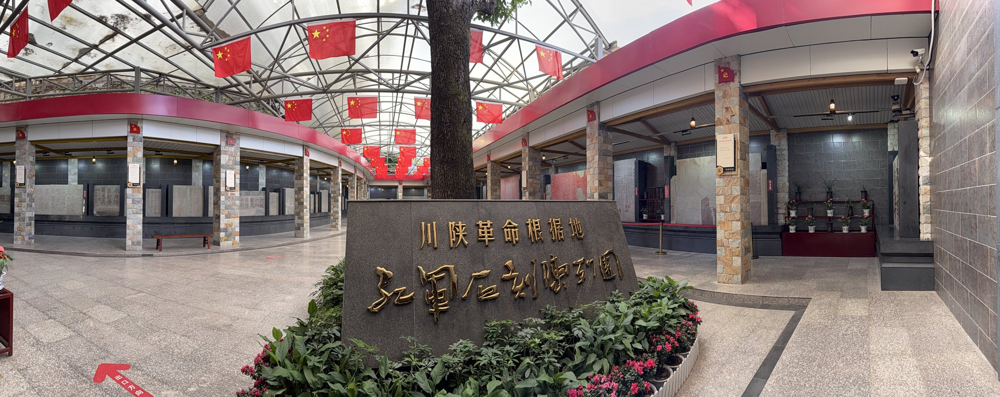
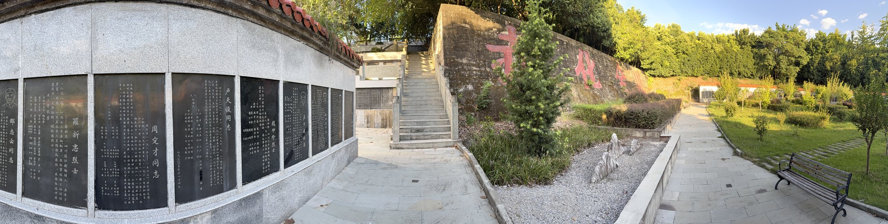

到达
怎么去
南龛山在巴中城区南侧，从市中心打车约十分钟即可到山脚；也可乘公交至南龛山附近站点，再步行上山。自驾有停车场，节假日车位较紧张。
上山是一段缓坡与石阶，沿途松柏夹道。腿脚不便者可从车道慢行，或请同行者搀扶。

上山的林荫道 · 步行约十余分钟

半山松柏，一段石阶，十四万个名字。这里不需要赶时间。
南龛山在巴中城区南侧，从市中心打车约十分钟即可到山脚；也可乘公交至南龛山附近站点，再步行上山。自驾有停车场，节假日车位较紧张。
上山是一段缓坡与石阶，沿途松柏夹道。腿脚不便者可从车道慢行，或请同行者搀扶。
上山的林荫道 · 步行约十余分钟
从山门到山顶，先看碑，再看人，最后看城。
无人机与手机拍摄的园区实景，点击播放，可全屏观看。
本站为个人学习作品，非官方发布。文字、图片、音频来源如下，版权归原作者所有。

南龛摩崖造像 · 与碑林同在一山